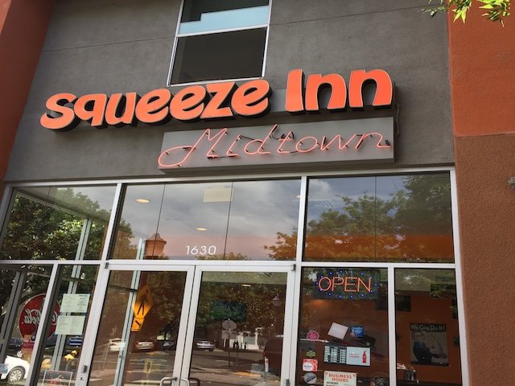
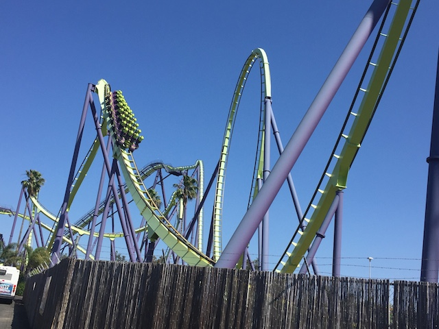
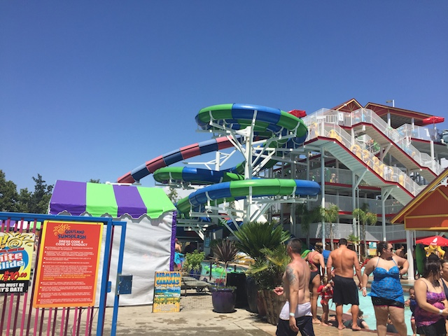
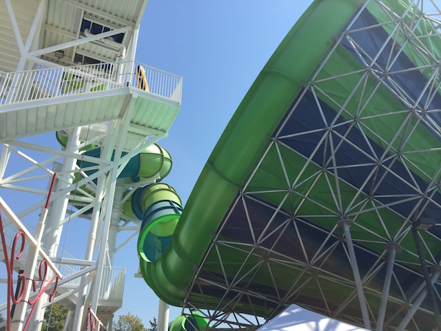
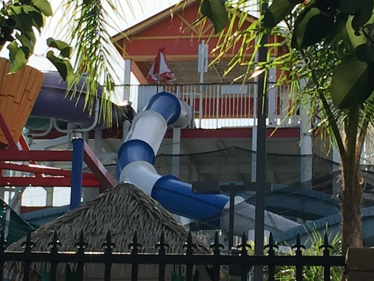
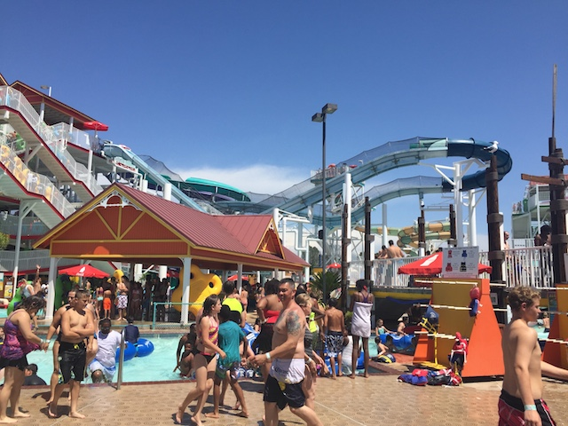

| |
SunSplash 2016

All right. Time for another update. We're back up in Northern California. We originally came up to ride the Joker at Six Flags Discovory Kingdom since that just opened up. However, I wasn't really thinking much about this trip before coming up and while I was spending a lot of time following up on Lightning Rod since I'm gonna be at Dollywood as part of our Deep South Trip this month, I didn't even think about Joker, and learned the day before that it was having technical problems. F*CK!!! Well, I already told a friend I was coming, I've got other fun things planned, and it's only Nor-Cal. I can easily just head back up later this year. So we're back up in Nor-Cal, and we're in Sacramento again for one of my favorite burger joints. The Squeeze Inn. Seriously guys. If you haven't eaten here, you must. The food is great, and yes. I do love the Cheese Skirt.
 Yeah. You all knew why I came back to Sacramento.
Yeah. You all knew why I came back to Sacramento.
 Yep. To get that stupid Wild Mouse credit that was closed last time. Well good news. It's open today. YAY!!!! =)
Yep. To get that stupid Wild Mouse credit that was closed last time. Well good news. It's open today. YAY!!!! =)
 This coaster was originally part of one of the Jersey Shore parks. However, the park got destroyed by Hurricane Sandy (thank you climate change). But their Wild Mouse was saved and found a new home at Scandia Sacramento.
This coaster was originally part of one of the Jersey Shore parks. However, the park got destroyed by Hurricane Sandy (thank you climate change). But their Wild Mouse was saved and found a new home at Scandia Sacramento.
 And in more good news, it didn't try to kill me. I heard a ton of bad things about the ride and how it was a rough peice of sh*t. But nope. It's just an odd and quirky little Wild Mouse. YAY!!! Cha-Ching!!! =)
And in more good news, it didn't try to kill me. I heard a ton of bad things about the ride and how it was a rough peice of sh*t. But nope. It's just an odd and quirky little Wild Mouse. YAY!!! Cha-Ching!!! =)
 Bye Scandia Sacramento. I'll come back when you add another credit (or maybe if you remove that stupid "No Screaming" rule from your Skyscraper, Nah).
Bye Scandia Sacramento. I'll come back when you add another credit (or maybe if you remove that stupid "No Screaming" rule from your Skyscraper, Nah).
All right. Let's have some night time (Love summers) fun at Six Flags Discovory Kingdom.
"Sorry folks. But Joker is closed today".
"Har har har. I'm a dolphin fountain. Gimme some fish".

Well, lets at least look on the bright side. We have Medusa. So at least we can get some good B&M Floorless action today.
 HA HA HA!!! I closed the ride just for you cause I knew you came up from So-Cal just to ride me!!! HA HA HA!!!
HA HA HA!!! I closed the ride just for you cause I knew you came up from So-Cal just to ride me!!! HA HA HA!!!
"Jokers closed! Didn't the elephant out front tell you that!?".
And hey. Might as well take a quick ride on Superman: Ultimate Flight. Cause that's a really fun ride.
Hey. This pizza place is really good. Definetly make sure to eat there if you're in Napa.
Log Flume Boat for sale!!! Who wants to buy a log flume boat!!?
We interrupt this update to bring you a cute dog. ♫Let's Face It. I'm Cute.♫
We came back to Six Flags Discovory Kingdom in the morning just in case they fixed Joker. Nope. =(
I love that marijuana is so common in California that they have to advertise that it's not allowed in the park. Hopefully now we can stop being insane and be the 5th state to legalize it this year. Oh, and HOORAY FOR NO SELFIE STICKS ALLOWED!!! =)
OK. More sad news. V2 was also closed both days. Normally, not a big deal. It was closed last time too. But that's the thing. It was closed last time. It was closed both days today. Nobody seems to be working on it. And the train is in peices in the station. It's making me wonder and ask the question. Is V2 SBNO? Seriously, it's been closed for months with no sign of reopening. =(
OK. This is depressing me. Cheer up and have a marathon on Superman since there's no line for it.
Our cars are so awesome that you can drive them on an RMC!! Can't say that about a Tesla!! Can you!? ;)
"Please tell me you guys aren't PETA/Blackfish assholes who want to put me in a Sea Pen".
Yes, that line for Medusa is too long. And it broke down shortly after this photo, so we left.
 No really. We left SFDK all together. I'll be back when Joker is open.
No really. We left SFDK all together. I'll be back when Joker is open.
 So we then headed over to SunSplash, a water park in Roseville I only heard about a month ago, and I have to say, this place is freaking awesome!!! Easily the best water park in California now that Wild Rivers (F*CK YOU IRVINE COMP!!!) is gone.
So we then headed over to SunSplash, a water park in Roseville I only heard about a month ago, and I have to say, this place is freaking awesome!!! Easily the best water park in California now that Wild Rivers (F*CK YOU IRVINE COMP!!!) is gone.
The water park is just part of the park as its also a Golf'N'Stuff style place. So yeah. There's definetly a Golf'N'Stuff vibe to this place.
*facepalm* REALLY!!? PEOPLE ARE THROWING GOLF BALLS ONTO THE FREEWAY!!? I F*CKING HATE HUMANITY!!!

So yeah. SunSplash may be a small water park, but they just cram slides in everywhere. Each complex has like 10 different slides on it. I know I mentioned Wild Rivers, but honestly, it most reminds me of that water park @ Skara Sommerland that I had to skip due to a lack of a bathing suit. I got a VERY similar vibe from this place as I got from Skara Sommerland.

All right. First things first, let's check out their Tantrum slide since I've never done one before.
 Dude! This slide is awesome! I really hope more tantrums are built cause they're a lot of fun!
Dude! This slide is awesome! I really hope more tantrums are built cause they're a lot of fun!

But enough of that. I primarily came because of Vortex. And Vortex is...
 A BODY TOILET BOWL!!! HOLY SH*T!!! A NEAR-CLONE OF BAZOOKA BOWLS!!! YES!!!! I LOVE these slides and haven't been able to do one since my last visit to Wild Rivers, which was WAY too long ago. So I'm just so happy that 5 years later, I got to ride a clone of one of my favorite water slides and experience the true helix of death once again. And yeah. It's one of the only water slides that makes me think "Oh crap" before going down (the only one that isn't a crazy Italian slide at Movieland Studios). So happy I got to ride this again. This made me happy I came up here. =D
A BODY TOILET BOWL!!! HOLY SH*T!!! A NEAR-CLONE OF BAZOOKA BOWLS!!! YES!!!! I LOVE these slides and haven't been able to do one since my last visit to Wild Rivers, which was WAY too long ago. So I'm just so happy that 5 years later, I got to ride a clone of one of my favorite water slides and experience the true helix of death once again. And yeah. It's one of the only water slides that makes me think "Oh crap" before going down (the only one that isn't a crazy Italian slide at Movieland Studios). So happy I got to ride this again. This made me happy I came up here. =D
 It may not be quite as good as the Double Down @ Schlitterbahn, but that pink slide does have some really good airtime.
It may not be quite as good as the Double Down @ Schlitterbahn, but that pink slide does have some really good airtime.

They even had a Master Blaster here, which was VERY similar to the one @ Schlitterbahn. Not the best water coaster ever (It's certainly no Wildebeest), but it's a lot of fun. =)
 Fun fact. This was actually the first half pipe slide I did. Apparently they're all over Nor-Cal, but nowhere to be found in So-Cal. I wasn't expecting too much, but this was great. Honestly, out of all the tube slides (Tornados, Tube Toilet Bowls (NO BAZOOKA BOWL CLONES!!!), Half Pipes, and Tantrums), Half Pipes may just be my favorite. I loved this slide.
Fun fact. This was actually the first half pipe slide I did. Apparently they're all over Nor-Cal, but nowhere to be found in So-Cal. I wasn't expecting too much, but this was great. Honestly, out of all the tube slides (Tornados, Tube Toilet Bowls (NO BAZOOKA BOWL CLONES!!!), Half Pipes, and Tantrums), Half Pipes may just be my favorite. I loved this slide.
 OMG!! Alex had never done a Trap Door Slide before!! So we had to take him on Double Dare here. Yeah, it's one of the waterboarding ones like the Orange Bonzai Pipeline from SFHH or the Aqua Dunk on the Disney Cruise, but this was my favorite of the waterboarding trap door slides since it's the fastest and it does have some laterals. Still a fun ride.
OMG!! Alex had never done a Trap Door Slide before!! So we had to take him on Double Dare here. Yeah, it's one of the waterboarding ones like the Orange Bonzai Pipeline from SFHH or the Aqua Dunk on the Disney Cruise, but this was my favorite of the waterboarding trap door slides since it's the fastest and it does have some laterals. Still a fun ride.
 This place LOVES their toilet bowls. Not only do they have an amazing Body Bazooka Bowls clone Toilet Bowl, but they have a normal tube toilet bowl, as well as a Mega Super-Sized Toilet Bowl, which honestly, dissapointed me. Maybe it's just because we're two skinny dudes doing the slide and we'd have better luck with a group of 4 or some fat people. Fingers crossed.
This place LOVES their toilet bowls. Not only do they have an amazing Body Bazooka Bowls clone Toilet Bowl, but they have a normal tube toilet bowl, as well as a Mega Super-Sized Toilet Bowl, which honestly, dissapointed me. Maybe it's just because we're two skinny dudes doing the slide and we'd have better luck with a group of 4 or some fat people. Fingers crossed.
And then we did Buffalo Wild Wings for dinner. YES!!! I love the place, but we stopped going there for reasons I forget. All I know is that my last visit was WAY too long ago, and I'm overdue. I gotta eat here more often. Even with Joker closed, I had a great weekend and am looking foreward to coming back up to ride Joker.
Home
|